Building a Bugle
Musical instrument design, FDM manufacturing, and acoustic analysis · Spring 2026
I designed and built a playable, modular bugle, refined its printed joints and seals, and used three interchangeable bells to study how bell geometry affects its recorded sound.
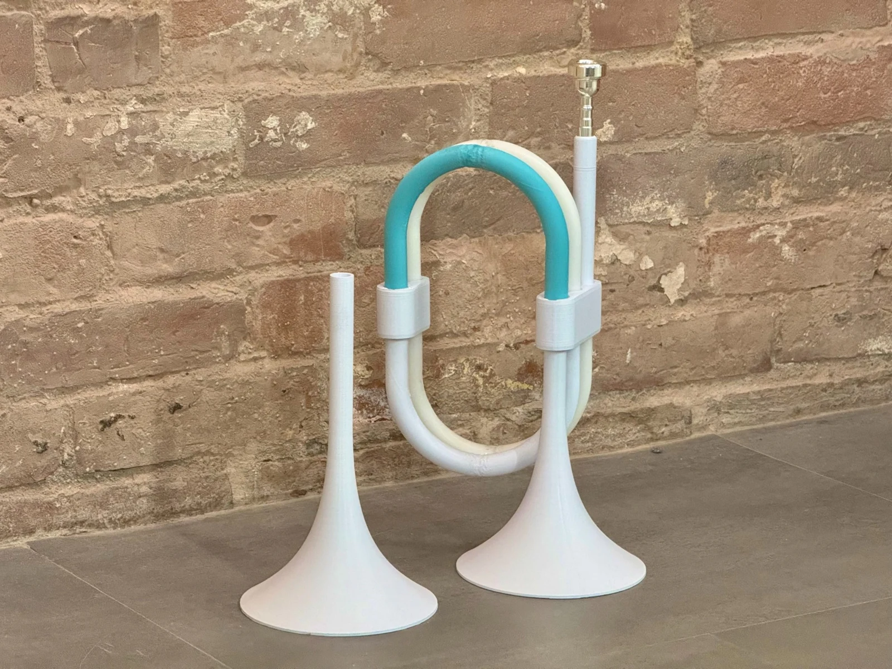
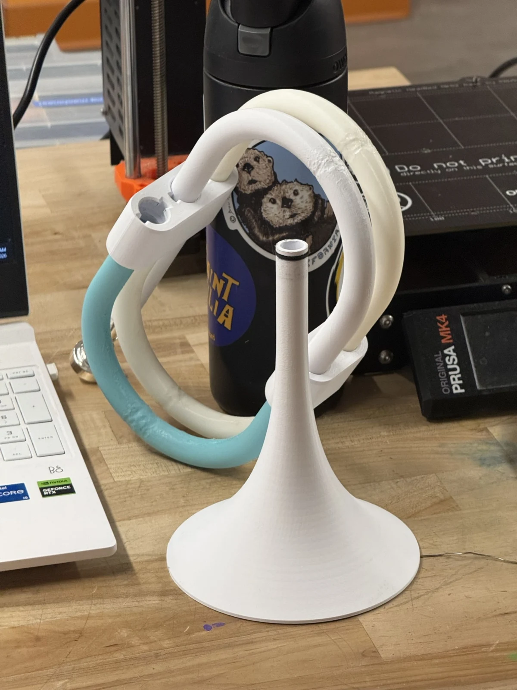
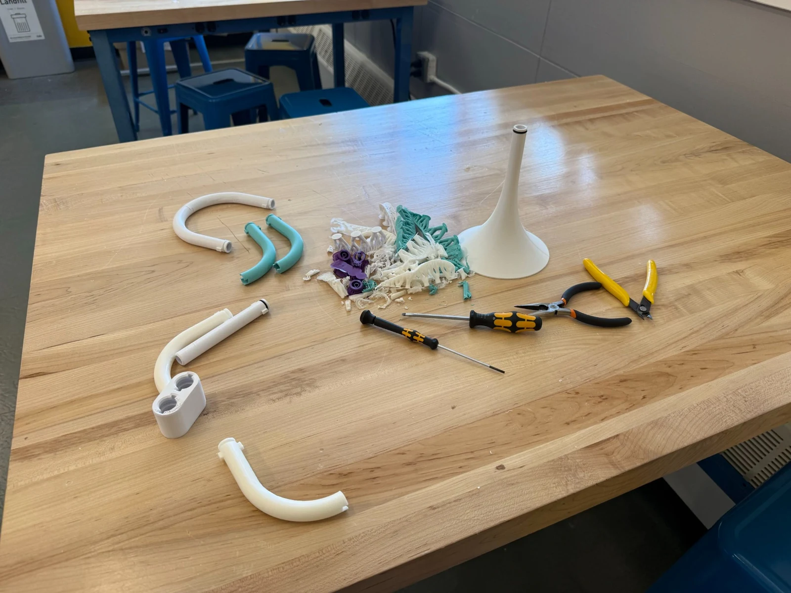
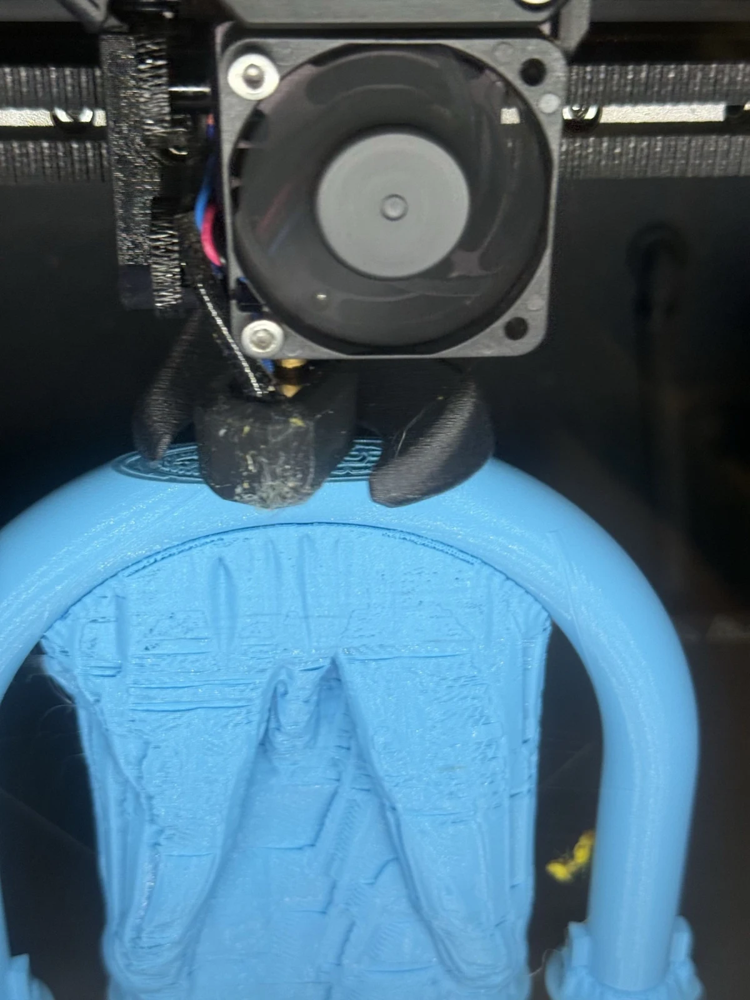
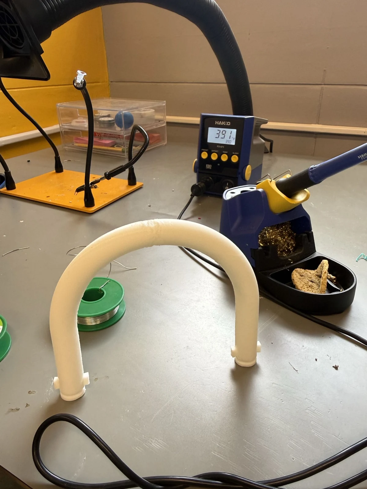
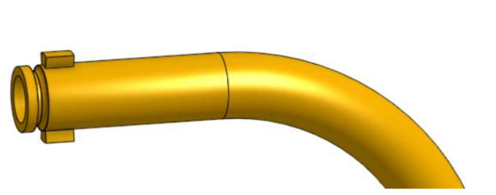
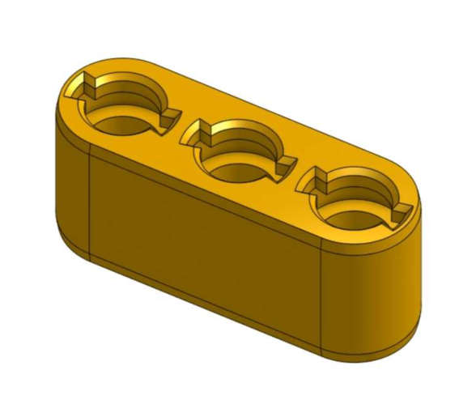
Project context & my role
For my Musical Instrument Design and Manufacturing class, I chose to design and manufacture a bugle, then investigate how a change in its geometry affected its sound. I completed the mechanical design, fabrication, assembly, and acoustic study independently, with support from my professor.
A bugle let me focus on the air path, resonant behavior, and manufacturability of a brass-style instrument within a semester. Its fixed tube length also made it a useful platform for studying interchangeable bells. My first working version could play bugle calls from sheet music; I then redesigned the assembly before moving into acoustic testing.
Mechanical design & manufacturing
The first version used 13 printed parts and a metal trumpet mouthpiece. I divided the air path into curved and straight segments that could be manufactured separately, then joined them with friction-fit connections. The important requirements were a playable air path, secure assembly, and sufficiently airtight joints and walls.
- Control print quality: I increased the wall count to four, used no infill, and adjusted flow and temperature to reduce porosity. Support settings and removal were especially important inside the curved hollow sections.
- Reduce the number of joints: For the second version, I replaced smaller curve-and-straight assemblies with larger semicircular sections that included straight ends.
- Improve assembly and sealing: I added tab-and-slot connections that locked with a 90-degree turn, plus filleted O-ring channels at the segment ends.
- Iterate on manufacturability: The larger curves were harder to print. Bed adhesion, support stability, and fit required repeated adjustments; nearly 1 kg of failed prints went into that iteration.
The revised connections improved sealing and assembly security while keeping the instrument modular. That same modularity later let me change the bell without rebuilding the body.
Bell geometry study
Research question: How does bell exit radius affect the bugle’s recorded pitch, signal amplitude, and tone? My hypothesis was that changing the bell would affect output and timbre more than pitch.
I made three interchangeable bells with exit radii of 6.5 cm, 8 cm, and 10 cm, keeping the main body and connection interface the same. For each bell, I recorded low, mid, and high notes, with five trials per note: 45 recordings across nine conditions.
- Recording geometry: An iPhone 16 Pro was positioned 3 ft from the bell and level with its opening, in a quiet enclosed space.
- Processing: I exported 48 kHz WAV files, trimmed each clip to a sustained note, and analyzed the signal in the frequency domain.
- Comparison: I calculated fundamental frequency, RMS amplitude, spectral centroid, and harmonic content, then compared trial-averaged results.
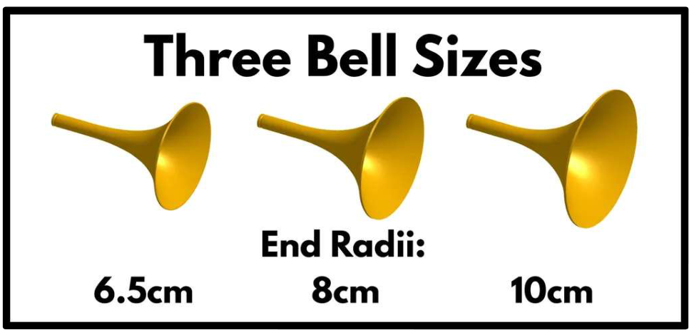
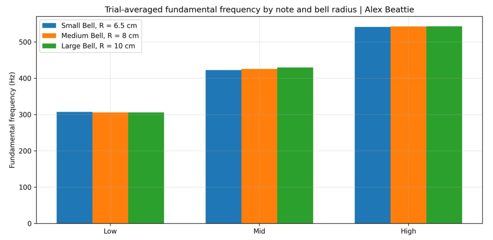
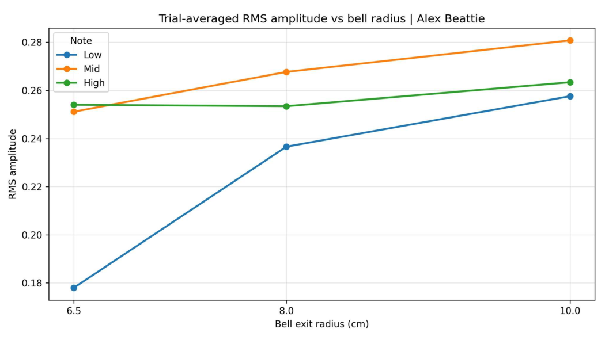
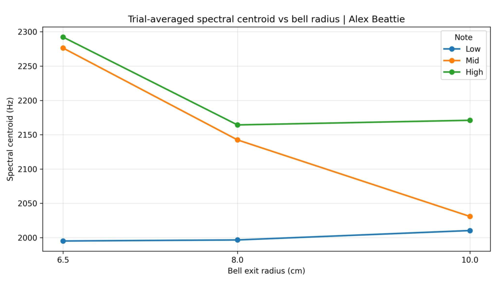
Results & interpretation
- Pitch changed comparatively little across bells: Within each tested note, the measured fundamental frequency stayed in a similar range. Bell changes had a clearer effect on the recorded amplitude and spectrum.
- Recorded amplitude increased most for the low note: Its mean RMS amplitude rose from approximately 0.178 with the 6.5 cm bell to 0.258 with the 10 cm bell. The mid note increased from about 0.251 to 0.281; the high note changed less.
- The timbre trend depended on the note: For the mid note, spectral centroid fell from approximately 2,276 Hz to 2,031 Hz between the smallest and largest bells. The high note also had a lower centroid with the largest bell. The low note did not show the same downward trend.
The lower mid- and high-note centroids were consistent with a less bright sound in those recordings. The results supported a note-dependent effect of bell geometry rather than a single change that applied equally to every note.
What these measurements establish
The RMS values describe the recorded signal in this setup. They support a relative comparison, but do not establish calibrated sound-pressure levels. Player variation, phone recording behavior, and room acoustics remain possible influences. A useful follow-up would control the excitation and microphone gain, then quantify variation between trials.
Engineering skills used
Mechanical design
Segmented air-path geometry, modular interfaces, twist-lock connections, and O-ring channels.
Design for FDM manufacturing
Part segmentation, wall settings, supports, tolerances, and post-processing of hollow curved parts.
Experimental design
Interchangeable geometry, a fixed recording arrangement, and repeated trials across nine conditions.
Acoustic analysis
Comparing fundamental frequency, RMS amplitude, spectral centroid, and harmonic content.
What I learned
The biggest design tradeoff was between assembly quality and printability. Larger tube sections removed joints and potential leak paths, but made successful printing more difficult. Getting the second version working meant treating the geometry and the manufacturing process as one problem.
The acoustic study gave the modular design another purpose: it became a way to investigate a specific design variable. Building a playable instrument was the first milestone; using it to compare how bell geometry affected the recordings completed the project.